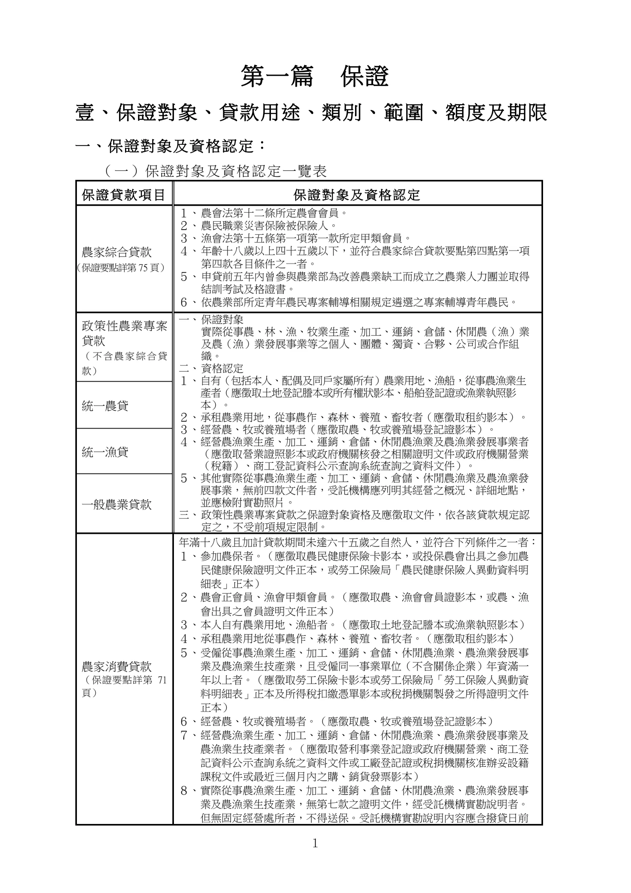
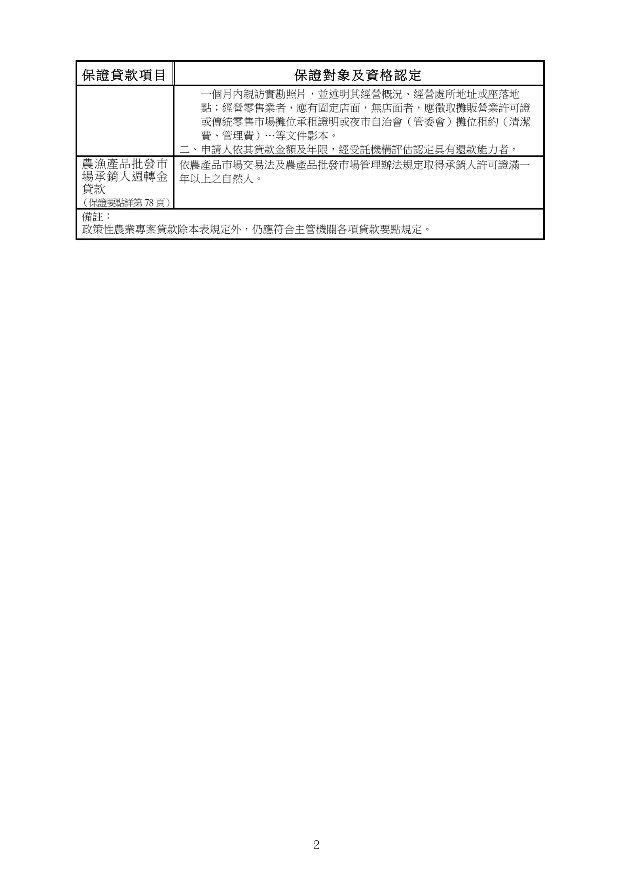
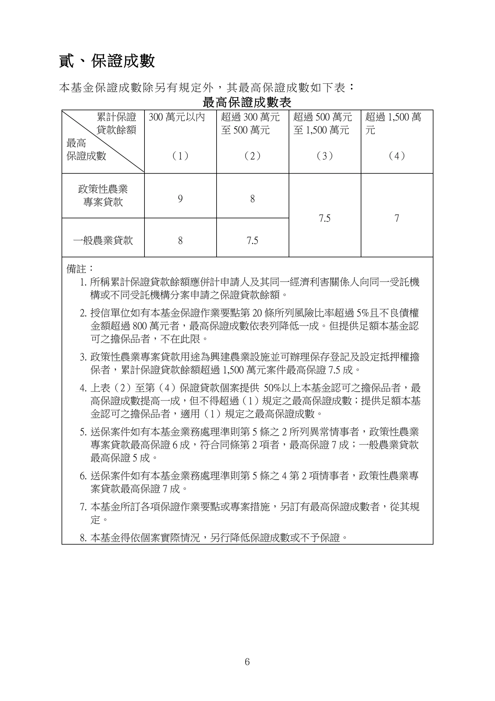
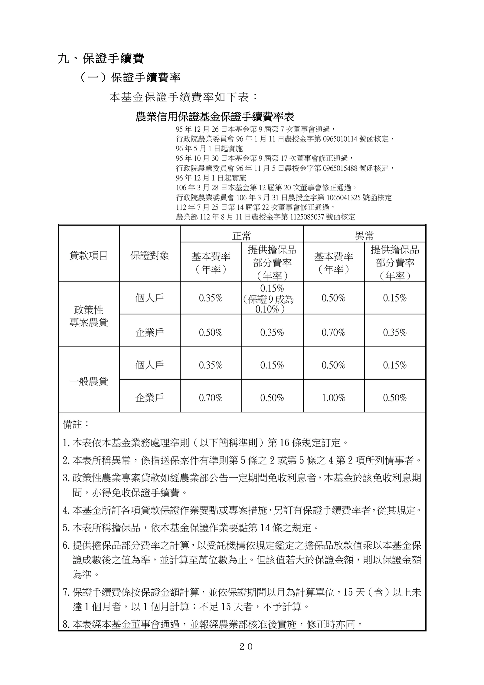

第一篇 保證
手冊頁：1 PDF頁：9／203

查看PDF文字層
第一篇 保證 壹、保證對象 、貸款用途、類別 、範圍 、額度及期限 一 、保 證對 象及資 格認 定： （一）保證對象及資格認定一覽表 保證貸款項目 保證對象 及 資 格 認 定 農家綜合貸款 （保證要點詳第75 頁） １、 農會法第十二條所定農會會員。 ２、 農民職業災害保險被保險人。 ３、 漁會法第十五條第一項第一款所定甲類會員。 ４、 年齡十八歲以上四十五歲以下，並符合農家綜合貸款要點第四點第一項 第四款各目條件之一者。 ５、 申貸前五年內曾參與農業部為改善農業缺工而成立之農業人力團並取得 結訓考試及格證書。 ６、 依農業部所定青年農民專案輔導相關規定遴選之專案輔導青年農民。 政策性農業 專案 貸款 （ 不 含 農 家 綜 合 貸 款） 一、 保證對象 實際從事農、林、漁、牧業生產、加工、運銷、倉儲、休閒農（漁）業 及農（漁）業發展事業等之個人、團體、獨資、合夥、公司或合作組 織。 二、 資格認定 １、 自有（包括本人、配偶及同戶家屬所有）農業用地、漁船，從事農漁業生 產者（應徵取土地登記謄本或所有權狀影本、船舶登記證或漁業執照影 本）。 ２、 承租農業用地，從事農作、森林、養殖、畜牧者（應徵取租約影本）。 ３、 經營農、牧或養殖場者（應徵取農、牧或養殖場登記證影本）。 ４、 經營農漁業生產、加工、運銷、倉儲、休閒農漁業及農漁業發展事業者 （應徵取營業證照影本或政府機關核發之相關證明文件或政府機關營業 （稅籍）、商工登記資料公示查詢系統查詢之資料文件）。 ５、 其他實際從事農漁業生產、加工、運銷、倉儲、休閒農漁業及農漁業發 展事業，無前四款文件者，受託機構應列明其經營之概況、詳細地點， 並應檢附實勘照片。 三、 政策性農業專案貸款之保證對象資格及應徵取文件，依各該貸款規定認 定之，不受前項規定限制。 統一農貸 統一漁貸 一般農業貸款 農家消費貸款 （保證要點詳第 71 頁） 年滿十八歲且加計貸款期間未達六十五歲之自然人，並符合下列條件之一者： １、 參加農保者。（應徵取農民健康保險卡影本，或投保農會出具之參加農 民健康保險證明文件正本，或勞工保險局「農民健康保險人異動資料明 細表」正本） ２、 農會正會員、漁會甲類會員。（應徵取農、漁會會員證影本，或農、漁 會出具之會員證明文件正本） ３、 本人自有農業用地、漁船者。（應徵取土地登記謄本或漁業執照影本） ４、 承租農業用地從事農作、森林、養殖、畜牧者。（應徵取租約影本） ５、 受僱從事農漁業生產、加工、運銷、倉儲、休閒農漁業、農漁業發展事 業及農漁業生技產業，且受僱同一事業單位（不含關係企業）年資滿一 年以上者。（應徵取勞工保險卡影本或勞工保險局「勞工保險人異動資 料明細表」正本及所得稅扣繳憑單影本或稅捐機關製發之所得證明文件 正本） ６、 經營農、牧或養殖場者。（應徵取農、牧或養殖場登記證影本） ７、 經營農漁業生產、加工、運銷、倉儲、休閒農漁業、農漁業發展事業及 農漁業生技產業者。（應徵取營利事業登記證或政府機關營業、商工登 記資料公示查詢系統之資料文件或工廠登記證或稅捐機關核准辦妥設籍 課稅文件或最近三個月內之購、銷貨發票影本） ８、 實際從事農漁業生產、加工、運銷、倉儲、休閒農漁業、農漁業發展事 業及農漁業生技產業，無第七款之證明文件，經受託機構實勘說明者。 但無固定經營處所者，不得送保。受託機構實勘說明內容應含撥貸日前
手冊頁：2 PDF頁：10／203

查看PDF文字層
保證貸款項目 保證對象 及 資 格 認 定 一個月內親訪實勘照片，並述明其經營概況、經營處所地址或座落地 點；經營零售業者，應有固定店面，無店面者，應徵取攤販營業許可證 或傳統零售市場攤位承租證明或夜市自治會（管委會）攤位租約（清潔 費、管理費）…等文件影本。 二、申請人依其貸款金額及年限，經受託機構評估認定具有還款能力者。 農漁產品批發巿 場承銷人週轉金 貸款 （保證要點詳第78 頁） 依農產品巿場交易法及農產品批發巿場管理辦法規定取得承銷人許可證滿一 年以上之自然人。 備註： 政策性農業專案貸款除本表規定外，仍應符合主管機關各項貸款要點規定。
手冊頁：3 PDF頁：11／203
（二）本基金受理農林漁牧產品運銷、倉儲之貸款保證，不包括進口外國之農林漁牧產品。但政策性農業專案貸款不在此限。
※所稱「進口外國之農林漁牧產品」，係指進口外國農林漁牧產品之進口業者。（93 年 1 月 5 日農信保企字第 00059 號函）
（三）申請保證之企業戶所營事業項目廣泛者，其經營本基金保證項目之業務占總營業額之比率應超過五０％。
所稱企業戶，係指保證對象中之團體、獨資（具營業證照或已辦妥商業登記者）、合夥、公司或合作組織。
企業戶商業登記資料，請向各縣、市政府網站「全國商工登記資料公示查詢系統」查詢。
二、保證貸款用途：
（一）以農業相關用途為限，其範圍如本基金「受理農業貸款保證範圍一覽表」（見附錄十七）。
（二）保證貸款案件，受託機構應詳細載明借戶之產銷種類、進銷貨管道及通路、經營方式、營運週轉期、銷售量值及營業處所等。
資本支出貸款案件並應依據借戶資金用途覈實撥付或依計畫之進度按期撥付。
（三）資本支出項目之金額超過三百萬元之貸款，受託機構應於資金貸放後六個月內實地辦理追蹤考核，並拍照存證備查。但其支出項目已有憑證證明或所購置之財產已徵為保證貸款之擔保品者，不在此限。
貸放後之追蹤考核，於政策性農業專案貸款另有規定者，從其規定。
（四）以保證貸款用以償還其他貸款機構之貸款案件者，應依下列方式並先報經本基金同意後，始得辦理：
１、借款人所經營之項目須符合本基金保證對象。
２、資金須用以償還借款人本人之貸款。但有特殊情形經本基金同意者，不在此限。
３、原貸款徵有擔保品者，該擔保品應移歸保證貸款之擔保。
但有特殊情形經本基金同意者，不在此限。
４、借款人及其同一經濟利害關係人之票信及債信均正常。
查看 PDF 原始文字層
（二 ）本基金受理農林漁牧產品運銷 、倉儲之貸款保證 ，不包括進口 外國之農林漁牧產品。但政策性 農業 專案 貸款不在此限。 ※所稱「進口外國之農林漁牧產品」，係指進口外國農林漁牧產 品之進口業者。 （93 年 1 月 5 日農信保企字第 00059 號函） （三 ）申 請 保 證 之 企 業 戶 所 營 事 業 項 目 廣 泛 者，其 經 營 本 基 金 保 證 項 目之業務占總營業額之比率應超過 五０ ％。 所 稱 企 業 戶 ， 係 指 保 證 對 象 中 之 團 體 、 獨 資（ 具 營業證 照 或已 辦妥 商業 登記者 ）、合夥、公司或合作組織。 企業戶 商業 登 記 資 料 ， 請 向 各 縣 、 市 政 府 網 站「 全 國 商工 登記 資料公示查詢系統 」 查詢。 二 、保 證貸 款用途 ： （ 一 ）以 農 業 相 關 用途 為 限，其 範 圍 如 本 基 金「 受 理 農 業 貸 款 保 證 範 圍 一 覽 表 」 （ 見 附錄 十 七 ）。 （ 二 ）保 證 貸 款 案 件，受 託 機 構 應 詳 細 載 明 借 戶 之 產 銷 種 類、進 銷 貨 管 道 及 通 路、經 營 方 式、營 運 週 轉 期、銷 售 量 值 及 營 業 處 所 等。 資 本 支 出 貸 款 案 件 並 應 依 據 借 戶 資 金 用 途 覈 實 撥 付 或 依 計 畫 之進度按期撥付。 （三 ）資 本 支 出 項 目 之 金 額 超 過 三 百 萬 元 之 貸 款，受 託 機 構 應 於 資 金 貸放後 六 個月內實地辦理追蹤考核，並拍照存證備查。但其支 出 項 目 已 有 憑 證 證 明 或 所 購 置 之 財 產 已 徵 為 保 證 貸 款 之 擔 保 品者，不在此限。 貸放後之追蹤考核，於政策性農業專案貸款另有規定者，從其 規定。 （四 ）以 保 證 貸 款 用 以 償 還 其 他 貸 款 機 構 之 貸 款 案 件 者，應依 下列方 式並先報 經本基金同意後，始得辦理： １、 借款人所經營之項目須符合本基金保證對象。 ２ 、 資 金 須 用 以 償 還 借 款 人 本 人 之 貸 款 。 但 有 特 殊 情 形 經 本 基 金同意者，不在此限。 ３ 、 原 貸 款 徵 有 擔 保 品 者 ， 該 擔 保 品 應 移 歸 保 證 貸 款 之 擔 保 。 但有特殊情形經本基金同意者，不在此限。 ４、借款人及其同一經濟利害關係人之票信及債信均正常。
手冊頁：4 PDF頁：12／203
５、如有增貸者，受託機構應於授信審核表或批覆文件述明增貸原因及資金用途。
三、保證類別：政策性農業專案貸款、一般農業貸款。
四、保證範圍：貸款（含契約透支）之本金、利息及法定訴訟費用。但利息最高以六個月且年利率最高以百分之五為限。
五、保證額度：
（一）申請人及其同一經濟利害關係人累計保證貸款餘額最高為新臺幣八千萬元。但政策性農業專案貸款另有規定者，不在此限。
所稱同一經濟利害關係人係指本人、配偶，及以本人或配偶為負責人之企業。同一經濟利害關係人範圍中所稱之本人、配偶，在企業戶係指企業負責人本人、配偶。
企業戶之負責人係以該企業營業證照或政府機關核發之相關證明文件或政府機關營業、商工登記資料公示查詢系統查詢之資料文件所載之負責人為準。
（二）個人戶申請短期週轉貸款時，其於全體金融機構之短期週轉授信總餘額（含本案），占最近年度總收入之比率，不得超過一００％。但有特殊情形經本基金同意者，不在此限。
（三）農漁民生活改良及家計週轉資金，最高以新臺幣五十萬元為限，並應以農家消費貸款、農家小額貸款、農家綜合貸款之保證項目送保。但農宅新建、購置、整修或本基金另有規定者，不受此限。
（四）個人戶貸款，其年度總收入（含農業、非農業營業收入），扣除成本（不含財務支出）、生活費用及其他支出後，應足供償還申請人於全體金融機構當年度應攤還之本息（不含短期週轉授信到期之本金）。
六、保證期限：
（一）以受託機構授信契約所訂期限為準，必要時得延長或縮短之。
（二）週轉金貸款以七年為限。貸款期間超過二年以上者，以分期攤還本金為原則。
查看 PDF 原始文字層
５ 、 如 有 增 貸 者 ， 受 託 機 構 應 於 授 信 審 核 表 或 批 覆 文 件 述 明 增 貸原因及資金用途。 三 、保 證類 別： 政策性農業 專案 貸款、一般農業貸款。 四 、保 證範 圍： 貸款（ 含 契 約 透 支 ）之 本 金、利 息 及 法 定 訴 訟 費 用。但 利 息 最 高 以 六 個月 且年 利率最高以百分之五 為限。 五 、保 證額 度： （一） 申請人及其同一經濟利害關係人累計保證貸款餘額最高為新 臺 幣八千萬元。但政策性農業 專案 貸 款 另 有 規 定 者 ， 不 在 此 限 。 所稱同一經濟利害關係人係指本人、配偶，及以本人或配偶為 負 責 人 之 企 業 。 同 一 經 濟 利 害 關 係 人 範 圍 中 所 稱 之 本 人、配偶， 在企業戶係指企業負責人本人 、 配偶 。 企業戶之負責人係以該企業營業證照 或政府機關核發之相關證 明文件 或 政 府 機 關 營 業 、 商 工 登 記 資 料 公 示 查 詢 系 統 查 詢 之 資 料文件 所載之負責人為準 。 （ 二 ）個人戶申請短期週轉貸款時，其於全體金融機構之短期週轉授 信 總 餘 額（ 含 本 案） ，占 最 近 年 度 總 收 入 之 比 率，不 得 超 過一０ ０ ％。但有特殊情形經本基金同意者，不在此限。 （ 三 ） 農漁民生活改良及家計週轉 資金 ，最 高 以 新臺 幣五 十萬元為限 ， 並應以農家消費貸款、農家小額貸款、農家綜合貸款 之 保 證 項 目送保 。但 農 宅 新 建、購 置、整 修或 本 基 金 另 有 規 定 者，不 受 此 限。 （ 四 ）個人 戶 貸 款，其 年 度 總 收 入（ 含 農 業、非 農 業營業 收 入 ） ，扣 除 成 本（ 不 含 財 務 支 出 ）、生活費用 及其他支出 後，應 足 供 償 還申 請人於 全體金融機構當年度 應 攤 還 之 本 息（ 不 含 短 期 週 轉 授 信 到期之本金） 。 六 、保 證期 限： （ 一 ） 以 受 託 機 構 授 信 契 約 所 訂 期 限 為 準 ， 必 要時 得 延 長 或 縮 短 之 。 （二） 週轉金貸款以七年為限。貸款期間超過 二 年 以 上 者，以 分 期 攤 還本金為原則。
手冊頁：5 PDF頁：13／203
（三）週轉金貸款本金得酌訂寬緩期，最長以二年為限。
（四）資本支出貸款應分期攤還本金，並得酌訂寬緩期，但寬緩期最長以三年為限。
（五）前述（二）、（三）、（四）三項規定於政策性農業專案貸款另有規定或有特殊情形經本基金同意者，不在此限。
查看 PDF 原始文字層
（三）週轉金貸款本金得酌訂寬緩期，最長以 二 年為限。 （ 四 ）資 本 支 出 貸 款 應 分 期 攤 還 本 金，並 得 酌 訂 寬 緩 期 ，但 寬 緩 期 最 長以三年為限。 （ 五 ）前 述（ 二 ） 、 （ 三 ）、 （ 四）三 項規定於 政策性農業 專案 貸款另有 規定或有特殊情形經本基金同意者 ，不在此限。
手冊頁：6 PDF頁：14／203

查看PDF文字層
貳、保證成數
本基金保證成數除另有規定外，其最高保證成數如下表 ：
最 高保 證成 數表
累計保證
貸款餘額
最高
保證成數
300 萬元以內
（1）
超過 300 萬元
至 500 萬元
（2）
超過 500 萬元
至 1,500 萬元
（3）
超過 1,500 萬
元
（4）
政策性農業
專案貸款 9 8
7.5 7
一般農業貸款 8 7.5
備註：
1. 所稱累計保證貸款餘額應併計申請人及其同一經濟利害關係人向同一受託機
構或不同受託機構分案申請之保證貸款餘額。
2. 授信單位如有本基金保證作業要點第 20 條所列風險比率超過 5%且不良債權
金額超過 800 萬元者，最高保證成數依表列降低一成。但提供足額本基金認
可之擔保品者，不在此限。
3. 政策性農業專案貸款用途為興建農業設施並可辦理保存登記及設定抵押權擔
保者，累計保證貸款餘額超過 1,500 萬元案件最高保證 7.5 成。
4. 上表（2）至第（4）保證貸款個案提供 50%以上本基金認可之擔保品者，最
高保證成數提高一成，但不得超過（1）規定之最高保證成數；提供足額本基
金認可之擔保品者，適用（1）規定之最高保證成數。
5. 送保案件如有本基金業務處理準則第 5 條之 2 所列異常情事者，政策性農業
專案貸款最高保證 6 成，符合同條第 2 項者，最高保證 7 成；一般農業貸款
最高保證 5 成。
6. 送保案件如有本基金業務處理準則第 5 條之 4 第 2 項情事者，政策性農業專
案貸款最高保證 7 成。
7. 本基金所訂各項保證作業要點或專案措施，另訂有最高保證成數者，從其規
定。
8. 本基金得依個案實際情況，另行降低保證成數或不予保證。手冊頁：7 PDF頁：15／203
一、本表依據本基金業務處理準則（下稱準則，見附錄二）第五條第一項第五款、第五條之一至第五條之四及本基金保證作業要點（見附錄三）第十九條至第二十二條規定編訂之。
二、依本表備註 2 規定降低保證成數之授信單位，由本基金於每年一月底前通知；授信單位每年三月一日起至次年二月底之間送保之案件（含借新還舊、轉（展）期案件）適用之。
三、授信單位之最高保證成數經核定後，其風險比率或不良債權金額明顯升高者，本基金得隨時另行核定其最高保證成數。
四、依保證作業要點第二十條規定應受限制之授信單位，若有下列情況之一者，得申請本基金重新核定最高保證成數：
（一）逾期保證餘額及代償餘額有明顯大幅收回者。
（二）現任授信主管最近三年內擔任其他授信單位授信主管期間所屬年度之風險比率均在五％以下者。
五、本表所稱「異常」，係指送保案件有下列情事之一者：
（一）申請人或其同一經濟利害關係人曾受拒絕往來處分，已辦妥清償贖回、提存備付或重提付訖之註記，經解除拒絕往來處分者。
（二）申請人或其同一經濟利害關係人曾受拒絕往來處分因屆期而解除，能證明票款已清償完畢或退票原因已消滅者。
※申請人或其同一經濟利害關係人之票信規定，以臺灣票據交換所「票據信用資料查覆單」揭露之資訊為準。但貸款機構知悉申請人或其同一經濟利害關係人曾有存款不足退票紀錄或曾受拒絕往來因屆期而解除，而票據交換所票信查覆內容已無揭露者，應於保證申請文件據實填載。
（三）申請人或其同一經濟利害關係人最近三年內曾有存款不足退票紀錄已辦妥清償贖回、提存備付或重提付訖之註記者。但其退票當日於金融機構之存款總餘額大於退票金額者不在此限。
（四）企業戶最近年度期末淨值低於資本額八０％，未低於五０％者。
但其後已辦理增資，而期中財務報表已無上開情事者，不在此限。
（五）企業戶最近兩年度連續營運虧損，未達三年連續營運虧損，或開始營業未滿二年其中一年虧損者。
（六）企業戶短、中期週轉授信總餘額占最近一年營業額之比率超過八０％，未超過一００％者。但憑訂單或合約辦理之購料或週
查看 PDF 原始文字層
一、 本表依據本基金業務處理準則 （下稱準則 ， 見附錄二） 第 五 條第 一 項 第 五 款、第五 條之 一 至第 五 條之 四 及本基金保證作業要點 （見附錄三） 第 十九 條至第 二十二條 規定編訂之。 二、 依本表備註 2 規 定 降 低 保 證 成 數 之 授 信 單 位 ， 由 本 基 金 於 每 年 一 月 底前通知；授信單位每年三月一日起至次年二月底之間送保之案件 （含借新還舊、 轉 （ 展 ）期案件）適用之。 三、 授信單位之 最高 保證成數 經核定後，其 風險 比率 或不良債權金額明 顯升高者，本基金得隨時另 行核定其 最高 保證成數 。 四、 依 保證作業要點第 二十 條 規定應受限制之授信單位，若有下列情況 之一者，得申請本基金重新核定最高保證成數： （一） 逾期保證餘額及代償餘額有明顯大幅收回者。 （二） 現 任 授 信 主 管 最 近 三 年 內 擔 任 其 他 授 信 單 位 授 信 主 管 期 間 所 屬 年度之 風險 比率均在 五 ％ 以 下者。 五、 本表所稱「異常」，係指送保案件有下列情事之一者： （ 一 ）申 請 人 或 其 同 一 經 濟 利 害 關 係 人 曾 受 拒 絕 往 來 處 分，已 辦 妥 清 償 贖 回 、 提 存 備 付 或 重 提 付 訖 之 註 記 ， 經 解 除 拒 絕 往 來 處 分 者 。 （ 二 ）申 請 人 或 其 同 一 經 濟 利 害 關 係 人 曾 受 拒 絕 往 來 處 分 因 屆 期 而 解 除 ， 能 證 明 票 款 已 清償 完 畢 或 退 票原 因 已 消 滅 者 。 ※申請人或其同一經濟利害關係人之票信規定，以 臺灣票據交換 所「票據信用資料查覆單」揭露之資訊為準。但貸款機構知悉 申請人或其同一經濟利害關係人 曾有存款不足退票紀錄或曾受 拒絕往來因屆期而解除，而票據交換所票信查覆內容已無揭露 者，應於保證申請文件據實填載 。 （ 三 ）申 請人或其同一經濟利害關係人最近三年內曾有存款不足退票 紀 錄 已 辦 妥 清 償 贖 回 、 提 存 備 付 或 重 提 付 訖 之 註 記 者 。 但 其 退 票 當 日 於 金 融 機 構 之 存 款 總 餘 額 大 於 退 票 金 額 者 不 在 此 限 。 （四） 企業 戶最 近年 度期 末淨 值低 於資 本額 八０ ％， 未低 於五０ ％者。 但 其 後 已 辦 理 增 資，而 期 中 財 務 報 表 已 無 上 開 情 事 者，不 在 此 限。 （ 五 ）企 業 戶 最 近 兩 年 度 連 續 營 運 虧 損，未 達 三 年 連 續 營 運 虧 損，或 開 始 營 業 未 滿 二 年 其 中 一 年 虧 損 者 。 （ 六 ）企 業 戶 短、中 期 週 轉 授 信 總 餘 額 占 最 近 一 年 營 業 額 之 比 率 超 過 八０ ％，未 超 過 一００ ％ 者。但 憑 訂 單 或 合 約 辦 理 之 購 料 或 週
手冊頁：8 PDF頁：16／203
轉授信，經受託機構評估能掌握還款來源，並經本基金同意者，不在此限。
（七）企業戶最近一年內變更負責人，原負責人於變更當時已受拒絕往來處分，而新任與原任負責人非二親等內血親者。
（八）企業戶開始營業未滿一年者。
※企業戶開始營業之認定，使用統一發票之企業，自開立營業收入發票之日起算；免用統一發票核定繳納營業稅之企業，以「營業稅查定課徵核定稅額繳款書」認定；依法免徵營業稅且免用統一發票之企業，得逕依營業事實認定。
（九）使用統一發票之企業戶最近年度期末負債比率（負債/淨值）超過四○○﹪者。但有下列情事者，不在此限：
１、其後已辦理增資，而期中財務報表已無上開情事者。
２、有特殊情形，經受託機構評估認為不影響償債能力，並經本基金同意者。
（十）保證人有前述（一）、（二）、（三）之票信不良紀錄情事，且該保證人係實際經營者、申請人或企業戶負責人之二親等內血親者。但有特殊情形經本基金同意者，不在此限。
六、企業戶有前述（四）、（五）、（六）及（八）之情事，於政策性專案農業貸款已提出具體改善計畫，經受託機構評估認為不影響償債能力，並經本基金同意者，得最高保證七成。
七、本表所稱「擔保品」，以設定第一順位抵押權或質權，且受託機構未主張其自貸案優先受償者為限。但原有先順位抵押權係擔保本基金保證貸款，或有特殊情形經本基金同意者，不在此限。
擔保品之價值照受託機構依規定鑑定之放款值為準，並計算至萬位數為止。
八、本基金認可之擔保品，其種類如下：
（一）持分全部或已徵取分管契約之土地。
（二）取得保存登記且持分全部之建築物，連同其座落之基地併供擔保者。
（三）船舶。
（四）存摺存款或定期存單、股票、債券及倉單等有價證券。
九、政策性農業天然災害低利貸款案件得不適用準則第五條之二減成之規定。
查看 PDF 原始文字層
轉 授 信 ， 經 受 託 機 構 評 估 能 掌 握 還 款 來 源 ， 並 經 本 基 金 同 意 者 ， 不 在 此 限 。 （ 七 ）企 業 戶 最 近 一 年 內 變 更 負 責 人 ， 原 負 責 人 於 變 更 當 時 已 受 拒 絕 往 來 處 分 ， 而 新 任 與 原 任 負 責 人 非 二 親 等 內 血 親 者 。 （ 八 ） 企 業 戶 開 始 營 業 未 滿 一 年 者 。 ※企業戶開始營業之認定，使用統一發票之 企業，自開立營業收 入發票之日起算；免用統一發票核定繳納營業稅之企業，以 「營 業稅查定課徵核定稅額繳款書」認定；依法免徵營業稅且免用 統一發票之企業，得逕依營業事實認定。 （ 九 ）使用統一發票之企業戶最近年度期末負債比率 （負債 /淨 值 ）超 過 四 ○ ○ ﹪ 者 。 但 有 下 列 情 事 者 ， 不 在 此 限 ： １ 、 其 後 已 辦 理 增 資 ， 而 期 中 財 務 報 表 已 無 上 開 情 事 者 。 ２ 、 有 特 殊 情 形 ， 經 受 託 機 構 評 估 認 為 不 影 響 償 債 能 力 ， 並 經 本 基 金 同 意 者 。 （ 十 ）保 證 人 有 前 述（ 一 ） 、 （ 二 ）、 （ 三 ）之 票 信 不 良 紀 錄 情 事 ，且該 保 證 人 係 實 際 經 營 者、申 請 人 或 企 業 戶 負 責 人 之 二 親 等 內 血 親 者 。 但 有 特 殊 情 形 經 本 基 金 同 意 者 ， 不 在 此 限 。 六、 企 業 戶 有 前 述（ 四 ）、（ 五 ）、（ 六 ）及（八） 之 情 事，於 政 策 性 專 案農業貸款已提出具體改善計畫，經受託機構評估認為不影響償債 能力，並經本基金同 意 者，得最高保證七成。 七、 本 表 所 稱「 擔 保 品 」，以 設 定 第 一 順 位 抵 押 權或質權 ，且 受 託 機 構 未 主張其自貸案優先受償者為限。但原有先順位抵押權係擔保本基金 保證貸款，或有特殊情形經本基金同意者，不在此限。 擔保品之價值照受託機構依規定鑑定之放款值為準，並計算至萬位 數為止。 八、 本基金認可之擔保品，其種類如下： （ 一 ） 持分全部或已徵取分管契約之 土地 。 （ 二 ） 取得保存登記 且持分全部之建築物，連同 其座落之基地併供擔保者 。 （ 三 ）船舶。 （ 四 ） 存摺存款或 定期存單 、 股票、債券及倉單等有價證券。 九、 政策性農業天然災害 低利 貸款案件 得 不適用準則第五條之二減成之 規定。
手冊頁：9 PDF頁：17／203
參、不予保證規定
一、送保案件有下列情事之一者，不予保證。但本基金另訂有保證作業要點者從其規定：
（一）申請人或其同一經濟利害關係人受拒絕往來處分中，或曾受拒絕往來處分因屆期而解除，或尚在暫予恢復往來期間內，或最近三年內有存款不足退票紀錄尚未辦妥清償贖回、提存備付或重提付訖之註記者。但因屆期而解除拒絕往來處分者，若能證明票款已清償完畢或退票原因已消滅者，得準用準則第五條之二之規定。
※申請人或其同一經濟利害關係人之票信規定，以臺灣票據交換所「票據信用資料查覆單」揭露之資訊為準。但貸款機構知悉申請人或其同一經濟利害關係人曾有存款不足退票紀錄或曾受拒絕往來因屆期而解除，而票據交換所票信查覆內容已無揭露者，應於保證申請文件據實填載。
（二）企業戶最近年度期末淨值低於資本額五０％者。但其後已辦理增資，而期中財務報表已無上開情事者，不在此限。
※企業戶淨值以最近年度申報營利事業所得稅之財務報表為準，其後已辦理增資者，得以增資後依稅捐機關規定設置之帳載資料編製之期中財務報表為準；惟企業因開業未滿一年或規模小，而未辦理營利事業所得稅結算申報者，得以下列報表認定之：
１、企業依稅捐機關規定設置之帳載資料編製之財務報表。
２、銀行公會訂定之「小規模營利事業簡易資料表」 -以在金融機構總授信金額新臺幣六百萬元以下；或一千五百萬元以下且具有十足擔保者。
（三）企業戶最近三年度連續營運虧損者。
※企業戶營運之盈虧以申報營利事業所得稅結算申報書之「帳載結算金額」欄之全年所得額為準。
（四）企業戶短、中期週轉授信總餘額占最近一年營業額之比率超過一００％者。但憑訂單或合約辦理之購料或週轉授信，經受託機構評估能掌握還款來源，並經本基金同意者，不在此限。
※企業戶短、中期週轉授信總餘額之計算方式：（96 年 9 月 19 日
查看 PDF 原始文字層
參、不予保證規定 一、 送 保 案 件 有 下 列 情 事 之 一 者 ， 不 予 保 證。但 本 基 金 另 訂 有 保 證 作 業 要 點者從其規定 ： （ 一 ）申 請 人 或 其 同 一 經 濟 利 害 關 係 人 受 拒 絕 往 來 處 分 中，或 曾 受 拒 絕 往 來 處 分因 屆期 而 解除 ， 或 尚 在 暫 予 恢 復 往 來 期 間 內 ， 或 最 近 三 年 內 有 存 款 不 足 退 票 紀 錄 尚 未 辦 妥 清 償 贖 回 、 提 存 備 付 或 重 提 付 訖 之 註 記 者 。但 因 屆 期 而 解 除 拒 絕 往 來 處 分者 ， 若 能 證 明 票 款 已 清 償 完 畢 或 退 票 原 因 已 消 滅 者 ， 得 準 用準則 第 五 條之 二 之 規 定 。 ※申請人或其同一經濟利害關係人之票信規定，以 臺灣票據交換 所「票據信用資料查覆單」揭露之資訊為準。但貸款機構知悉 申請人或其同一經濟利害關係人 曾有存款不足退票紀錄或曾受 拒絕往來因屆期而解除，而票據交換所票信查覆內容已無揭露 者，應於保證申請文件據實填載 。 （ 二 ）企 業 戶 最 近 年 度 期 末 淨 值 低 於 資 本 額五０ ％ 者。但 其 後 已 辦 理 增 資 ， 而 期 中 財 務 報 表 已 無 上 開 情 事 者 ， 不 在 此 限 。 ※企業戶淨值以最近年度申報營利事業所得稅之財務報表為準， 其後已辦理增資者，得以 增資後依稅捐機關規定設置之帳載資 料編製之期中財務報表為準 ； 惟企業因開業未滿一年或規模小 ， 而未辦理營利事業所得稅結算申報者，得以下列報表認定之： １、企業依稅捐機關規定設置之帳載資料編製之財務報表。 ２、銀行公會訂定之「小規模營利事業簡易資料表」 -以在金融 機構總授信 金額新臺幣六 百萬元以下 ；或一千五百萬元以 下且具有十足擔保 者。 （ 三 ） 企 業 戶 最 近 三 年 度 連 續 營 運 虧 損 者 。 ※企業戶營運之盈虧以申報營利事業所得稅結算申報書之「帳載 結算金額」欄之全年所得額為準。 （ 四 ）企 業 戶 短、中 期 週 轉 授 信 總 餘 額 占 最 近 一 年 營 業 額 之 比 率 超過 一 ０ ０％者。 但 憑 訂 單 或 合 約 辦 理 之 購 料 或 週 轉 授 信 ， 經 受 託 機 構 評 估 能 掌 握 還 款 來 源 ， 並 經 本 基 金 同 意 者 ， 不 在 此 限 。 ※企業戶短、中期週轉授信總餘額之計算方式： （96 年 9 月 19 日
手冊頁：10 PDF頁：18／203
農信保策字第 000207 號函）
１、短、中期週轉授信總餘額包含下列各項：
（１）本次擬送保授信（簡稱本案）核准時送保企業在授信單位現有餘額。
（２）本次新申貸額度。
（３）本案核准前向聯徵中心查得送保企業在其他金融機構週轉授信餘額。
２、下列授信不必計入前項總餘額內：
（１）全額結匯之授信。
（２）徵有足額定存單擔保之授信。
（３）出口押匯餘額（聯徵中心授信科目代號為 P 者）。
（４）應收保證款項（聯徵中心授信科目代號為 L 或 LS 者）。
（５）其他金融機構辦理之中期放款、中期擔保放款（聯徵中心授信科目代號為 H、HS，但用途代號為 4 者，仍應計入）。
（６）無追索權應收帳款承購授信（聯徵中心授信科目代號為 V 者）。
（７）其他經本基金認可之授信項目。
※企業戶最近一年營業額係以最近年度營利事業所得稅結算申報書營收淨額，或最近一年「營業人銷售額與稅額申報書」上之銷售額總計，或其他報稅資料所列營收淨額核計為準；核定課稅者之營業額，依繳款書之收入或自編報表營收認定；免徵營業稅者之營業額，得依自編報表營收認定。
以自編報表認定者，應提供佐證資料送經本基金同意後辦理。
※「最近一年」係指授信申貸日前之最近十二個月。
（五）企業戶最近一年內變更負責人，原負責人於變更當時已受拒絕往來處分，而新任與原任負責人為二親等內血親者。
（六）申請人或其同一經濟利害關係人被提起足以影響其償債能力之訴訟，或受破產宣告，或清理債務（含債務協商、更生或清算），或其財產受假扣押、假處分或強制執行者。
（七）申請人或其同一經濟利害關係人之債務（含現金卡及信用卡）
查看 PDF 原始文字層
農信保策字第 000207 號函） １、短、中期週轉授信總餘額包含下列各項： （１） 本次擬送保授信 （簡稱本案 ）核准時送保企業在授信 單位現有餘額。 （２） 本次新申貸額度。 （３） 本案核准前向聯徵中心查得送保企業在其他金融機構 週轉授信餘額。 ２、下列授信不必計入前項總餘額內： （１） 全額結匯之授信。 （２） 徵有足額定存單擔保之授信。 （３） 出口押匯 餘額（聯徵中心授信科目代號為 P 者）。 （４）應收保證款項（聯徵中心授信科目代號為 L 或 LS 者）。 （５） 其他金融機構辦理之中期放款、中期擔保放款（聯徵 中心授信科目代號為 H、HS，但用途代號為 4 者，仍 應計入）。 （６） 無追索權應收帳款承購授信（聯徵中心授信科目代號 為 V 者）。 （７） 其他經本基金認可之授信項目。 ※企業戶最近一年營業額係以最近年度營利事業所得稅結算申報 書營收淨額，或最近一年「營業人銷售額與稅額申報書」上之 銷售額總計，或其他報稅資料所列營收淨額核計為準；核定課 稅者之營業額，依繳款書之收入或自編報表營 收認定 ；免徵營 業稅者之營業額，得依自編報表營收認定。 以自編報表認定者，應提供佐證資料送經本基金同意後辦理。 ※「最近一年」係指授信申貸日前之最近十二個月。 （ 五 ）企 業 戶 最 近 一 年 內 變 更 負 責 人，原 負 責 人 於 變 更 當 時 已 受 拒 絕 往 來 處 分 ， 而 新 任 與 原 任 負 責 人 為 二 親 等 內 血 親 者 。 （ 六 ）申 請 人 或 其 同 一 經 濟 利 害 關 係 人 被 提 起 足 以 影 響 其 償 債 能 力 之 訴 訟，或 受 破 產 宣 告，或 清 理 債 務 （ 含 債 務 協 商、更 生 或 清 算 ） ， 或其 財 產 受 假 扣 押 、 假 處 分 或 強 制 執 行 者 。 （ 七 ） 申 請 人 或 其 同 一 經 濟 利 害 關 係 人 之 債 務（ 含 現 金 卡 及 信 用 卡 ）
手冊頁：11 PDF頁：19／203
或保證債務已逾期者。
※現金卡之債務逾期，係指現金卡放款本金最近一期逾期未繳，或聯徵中心「B33」、「 B36」或「B66」現金卡最近一期還款紀錄代號有屬「 A」、「 B」或「 1」至「 6」者而言。
信用卡之債務逾期，係指聯徵中心「 K33」信用卡最近一期繳款金額狀況代號有屬「 3-未繳足最低金額」、「 4-全額未繳」，或繳款時間狀況代號有屬「 1」至「 7」者而言。
除前二項外，所稱債務或保證債務已逾期，係指債務或保證債務未依約分期攤還或未依約繳付利息或債務全案屆期（含貸款機構視同到期）未償還者。（96 年 9 月 19 日農信保策字第000207 號函）
※所稱「保證債務」，係指申請人或其同一經濟利害關係人擔任保證人之債務。（103 年 10 月 7 日農信保策字第 1030300215號函）
（八）申請人或其同一經濟利害關係人之債務本金（含現金卡及信用卡）逾期三個月以上始清償，清償後尚未滿二個月者。
※所稱債務本金逾期三個月以上始清償，係指債務全案屆期（含貸款機構視同到期）三個月以上始清償而言；現金卡及信用卡逾期三個月以上始清償，係指現金卡及信用卡款項未繳轉列催收款三個月以上始清償而言。（96 年 9 月 19 日農信保策字第000207 號函）
（九）申請人或其同一經濟利害關係人為本基金代位清償案件之主從債務人者。但其後業經全數清償或依法院成立之和解或調解清償結案，自清償之日起算已屆滿一年者，不在此限。
（十）申請人或其同一經濟利害關係人積欠本基金保證手續費者。
（十一）貸款年利率超過八％者。
※受託機構採機動或階梯（段）式計息之保證案件，於貸款存續期間，如僅因基準（本）放款利率調整致年利率超過八％者，並不違反本項規定。但如經受託機構調整加碼幅度致年利率超過八％者，即屬違反本項規定。（96 年 5 月 28 日農信保策字第 000132 號函）
查看 PDF 原始文字層
或 保 證 債 務 已 逾 期 者 。 ※現金卡之債務逾期，係指現金卡放款本金最近一期逾期未繳， 或聯徵中心 「B33」、「 B36」或「B66」現金卡最近一期還款 紀錄代號有屬「 A」、「 B」或「 1」至「 6」者而言。 信用卡之債務逾期，係指聯徵中心 「 K33」信用卡最近一期繳款 金額狀況代號有屬「 3-未繳足最低金額」、「 4-全額未繳」，或 繳款時間狀況代號有屬「 1」至「 7」者而言。 除前二項外， 所稱債務或保證債務已逾期，係指債務或保證債 務未依約分期攤還或未依約繳付利息或債務全案屆期（含貸款 機構視同到期）未償還者。 （96 年 9 月 19 日農信保策字第 000207 號函） ※所稱「保證債務」，係指申請人或其同一經濟利害關係人擔任 保證人之債務。 （103 年 10 月 7 日農信保策字第 1030300215 號函） （ 八 ） 申 請 人 或 其 同 一 經 濟 利 害 關 係 人之 債 務本金 （ 含 現 金 卡 及 信 用 卡） 逾 期 三 個 月 以 上 始 清 償 ， 清 償 後 尚 未 滿 二 個 月 者 。 ※所稱債務本金逾期三個月以上始清償，係指債務全案屆期（含 貸款機構視同到期）三個月以上始清償 而言；現金卡及信用卡 逾期三個月以上始清償，係指現金卡及信用卡款項未繳轉列催 收款三個月以上始清償而言。 （96 年 9 月 19 日農信保策字第 000207 號函） （九） 申 請 人 或 其 同 一 經 濟 利 害 關 係 人 為本 基 金 代 位 清 償 案 件 之 主 從 債 務 人 者 。 但 其 後 業 經 全 數 清 償 或 依 法 院 成 立 之 和 解 或 調 解 清 償 結 案 ， 自 清 償 之 日 起 算 已 屆 滿 一 年 者 ， 不 在 此 限 。 （ 十 ） 申 請 人 或 其 同 一 經 濟 利 害 關 係 人 積 欠 本 基 金 保 證 手 續 費 者 。 （十 一 ） 貸款年利率超過 八 ％者。 ※受託機構採機動或階梯（段）式計息之保證案件，於貸款存續 期間，如僅因基準（本）放款利率調整致年利率超過 八％者， 並不違反 本項規定。但如經受託機構調整加碼幅度致年利率超 過八％者，即屬違反 本項規定。 （96 年 5 月 28 日農信保策字 第 000132 號函）
手冊頁：12 PDF頁：20／203
（十二）保證人有前述（一）、（六）、（七）、（八）之票、債信不良紀錄情事，且該保證人係實際經營者、申請人或企業戶負責人之二親等內血親者。但有特殊情形經本基金同意者，不在此限。
二、企業戶有前述（二）、（三）、（四）之情事，於政策性專案農業貸款已提出具體改善計畫，經受託機構評估認為不影響償債能力，並經本基金同意者，得最高保證七成。
查看 PDF 原始文字層
（ 十 二 ） 保 證 人 有 前 述 （ 一 ） 、 （ 六 ） 、 （ 七 ） 、 （ 八 ） 之票 、 債 信 不 良 紀 錄 情 事 ， 且 該 保 證 人 係 實 際 經 營 者 、 申 請 人 或 企 業 戶 負 責 人 之 二 親 等 內 血 親 者 。 但 有 特 殊 情 形 經 本 基 金 同 意 者 ， 不 在 此 限。 二、 企 業 戶 有 前 述 （ 二 ） 、 （ 三 ） 、 （ 四 ） 之 情 事 ， 於 政 策 性 專 案 農 業 貸 款 已 提 出 具 體 改 善 計 畫 ， 經 受 託 機 構 評 估 認 為 不 影 響 償 債 能 力 ， 並 經 本基金同 意 者，得最高保證 七 成。
手冊頁：13 PDF頁：21／203
肆、申請信用保證作業
一、徵信作業（票債信查詢及「個人資料保護法」告知義務之履行）：
（一）申請信用保證（含轉（展）期）案件，應確實依據相關法令及受託機構有關規定辦理徵、授信作業，除本基金另有規定者外，應對借款人及其同一經濟利害關係人暨保證人，依本基金「申請信用保證案件辦理票信、債信查詢注意事項」之規定（附錄十五參照），向票據交換所及金融聯合徵信中心辦理票、債信查詢。
※送保案件票、債信查詢有效期間之末日為例假日或其他休息日者，得順延之。
（二）受託機構知悉主從債務人及同一經濟利害關係人之不良徵信紀錄，應據實載明於申請保證文件。
（三）受託機構申請信用保證，若有特殊情形無法取得同一經濟利害關係人之同意書而未能辦理聯徵債信查詢者，應經本基金同意。
關係企業若屬非法人組織或經登記歇業、解散、撤銷、廢止者，得免對該企業辦理聯徵債信查詢。
申請人或配偶票交所票信查覆內容「關係戶資訊」欄為「無」者，得免對其為負責人之企業辦理票信查詢。
（四）「個人資料保護法」告知義務之履行
１、受託機構對於申請本基金保證之貸款案件，請於履行自身個人資料保護法第八條第一項之告知義務同時，代本基金履行個人資料保護法第九條第一項之告知義務。
２、受託機構得採用本基金告知書（格式 31）代本基金履行前項告知義務，或依上揭告知書內容，採行與受託機構履行自身告知義務相同之告知及舉證方式。
３、嗣後如發現個案有漏未告知情形，尚不影響該送保案件之保證效力，惟仍應補行告知。
二、擔保品及保證人：
（一）擔保品：
１、受託機構對以信用保證貸款購置之土地、建物、漁船或機器設備，應徵為擔保品並設定第一順位抵押權或動產抵押權。但因無法設定或無設定實益或有特殊情形，經本基金
查看 PDF 原始文字層
肆、 申請信用保證 作業 一、徵信 作業（票債 信查 詢及「個 人資 料保 護法 」 告 知義 務之 履行）： （ 一 ）申 請 信 用 保 證（含 轉（ 展 ）期） 案 件 ， 應 確 實 依 據 相 關 法 令 及 受託機構有關規定辦理徵 、 授信作業 ， 除 本 基 金 另 有 規 定 者 外 ， 應對借款人及其同一經濟利害關係 人 暨 保 證 人，依 本 基 金「 申 請信用保證案件辦理票信、債信查詢注意事項」之規定（附錄 十 五 參照 ），向 票 據 交 換 所 及 金 融 聯 合 徵 信 中 心 辦 理 票、債 信 查 詢。 ※送保案件票、債信查詢有效期間之末日為例假日或其他休息日 者，得順延之。 （ 二 ）受 託 機 構 知 悉 主 從 債 務 人 及 同 一 經 濟 利 害 關 係 人 之 不 良 徵 信 紀 錄，應據實載明於申請保證文件。 （三） 受託機構 申 請 信 用 保 證，若 有 特 殊 情 形 無 法 取 得 同 一 經 濟 利 害 關係人之同意書而未能辦理聯徵債信查詢者，應經本基金同意 。 關係企業若屬非法人組織或經登記歇業 、 解散 、 撤銷 、 廢止者 ， 得免對該企業辦理聯徵債信查詢。 申請 人 或 配 偶 票 交 所 票 信 查 覆 內 容 「 關 係 戶 資 訊 」 欄 為 「 無 」 者，得免對其為負責人之企業辦理票信查詢。 （ 四 ） 「 個 人 資 料 保 護 法 」告知義務之履行 １、 受託機構 對 於 申 請 本 基 金 保 證 之 貸 款 案 件 ，請 於 履 行 自 身 個人資料保護法第八條第一項之告知義務同時，代本基金 履行個人資料保護法第九條第一項之告知義務。 ２、 受託機構得採用本基金告知書（ 格式 31）代本基金履行前 項告知義務，或依上揭告知書內容，採行與受託機構履行 自身告知義務相同之告知及舉證方式。 ３、 嗣後如發現個案有漏未告知情形，尚不影響該送保案件之 保證效力，惟仍應補行告知。 二 、擔 保品 及保證 人 ： （一）擔保品： １、 受託機構對以信用保證貸款購置之土地、建物、漁船或機 器設備，應徵為擔保品並設定第一順位抵押權或動產抵押 權。但因無法設定或無設定實益或有特殊情形，經本基金
手冊頁：14 PDF頁：22／203
同意者，不在此限。
※所稱「購置」係指購買、建造或興建。
２、貸款申請保證，其提供擔保品者，受託機構應於申請保證文件中，列明擔保品放款值及抵押權或質權設定情形。
３、受託機構對保證貸款與其未經本基金保證之其他債權，以同一擔保品設定同一順位抵押權或最高限額抵押權或質權，若提供部分放款值作為保證貸款之擔保，並依擔保費率計算保證費者，受償時應按所提部分放款值占該擔保品總放款值之比例分配，但有其他約定者，得從其約定。
若同一擔保品由共同設定之未送保貸款優先受償，而送保貸款已無放款餘值僅供加強擔保者，仍應依前項規定，於申請保證文件中，列明擔保品放款值及抵押權設定情形。
其受償時得由共同設定之未送保貸款優先受償，若有餘款則供送保貸款受償。且該共同設定之未送保貸款如經展期或借新還舊或清償後再行貸放，在原約定優先受償之抵押權範圍內，仍具有優先受償權。惟超過原約定優先受償之抵押權範圍之其他債權，則不享有上述優先受償權，且其受償順位應於送保貸款之後。
４、受託機構對於其有利害關係者之授信送由本基金保證者，其中未獲保證部分，如再提足夠擔保品供設定抵押，該擔保品應視為送保案件全案之擔保；嗣後如有逾期未償情事，經處分該擔保品所得，應按保證成數分別沖償保證及未獲保證部分。
５、保證貸款徵提擔保品者，其抵押權設定金額依受託機構相關規定辦理。但本基金得視個案情況要求提高設定金額。
６、以建物或漁船供擔保者，受託機構應依相關規定，要求借款人投保適當金額之保險，並應於保險期限屆至前續保。
依法令或受託機構規定無需投保保險者，應列載其依據。
７、受託機構對於以信用保證貸款購置之機器設備，其申請人累計保證貸款餘額新臺幣五百萬元以內之案件，如所購置之機器設備經受託機構評估無法設定動產抵押權或設定困難或無設定實益，得逕依其內規辦理。
查看 PDF 原始文字層
同意者，不在此限。 ※所稱「購置」係指購買、建造或興建。 ２、 貸款申請保證，其提供擔保品者，受託機構應於申請保證 文件中，列明擔保品放款值及抵押權或質權設定情形。 ３、 受託機構對保證貸款與其未經本基金保證之其他債權，以 同一擔保品設定同一順位抵押權或最高限額抵押權或質權， 若提供部分放款值作為保證貸款之擔保，並依擔保費率計 算保證費者，受償時應按所提部分放 款值占該擔保品總放 款值之比例分配，但有其他約定者，得從其約定。 若同一擔保品由共同設定之未送保貸款優先受償，而送保 貸款已無放款餘值僅供加強擔保者，仍應依前項規定，於 申請保證文件中，列明擔保品放款值及抵押權設定情形。 其受償時得由共同設定之未送保貸款優先受償，若有餘款 則供送保貸款受償。且該共同設定之未送保貸款如經展期 或借新還舊或清償後再行貸放，在原約定優先受償之抵押 權範圍內，仍具有優先受償權。惟超過原約定優先受償之 抵押權範圍之其他債權，則不享有上述優先受償權，且其 受償順位應於送保貸款之後。 ４、 受託機構對於其有利害 關 係 者 之 授 信 送 由 本 基 金 保 證 者 ， 其中未獲保證部分，如再提足夠擔保品供設定抵押，該擔 保品應視為送保案件全案之擔保 ； 嗣後如有逾期未償情事 ， 經處分該擔保品所得，應按保證成數分別沖償保證及未獲 保證部分。 ５、 保證貸款徵提擔保品者，其抵押權設定金額依受託機構相 關規定辦理。但本基金得視個案情況要求提高設定金額。 ６、 以建物或漁船供擔保者，受託機構應依相關規定，要求借 款人投保適當金額之保險，並應於保險期限屆至前續保。 依法令或受託機構規定無需投保保險者，應列載其依據。 ７、 受託機構對於以信用保證貸款購置之機器設備，其 申 請 人 累計保證貸款餘 額 新 臺 幣 五 百 萬 元 以 內 之 案 件 ， 如 所 購 置 之機器設備經受託機構評估無法設定動產抵押權或設定困 難或無設定實益，得逕依其內規辦理。
手冊頁：15 PDF頁：23／203
（二）保證人：
１、借款人年齡加計借款期間已達七十歲者，得斟酌其健康狀況，必要時加徵年齡加計借款期間未滿六十五歲之保證人一人。
２、送保案件企業戶負責人及實際經營者應徵提為保證人。但有特殊情形經本基金同意者，不在此限。
３、保證人為一般保證或連帶保證之認定，以貸款機構與其簽訂之契約據所載為準。
三、信用保證案件處理方式：
（一）受託機構為明瞭申請人及其同一經濟利害關係人以往之信用保證情形，得於本基金網路作業系統「信用保證情形查詢作業」辦理查詢。
※本基金原「送保前查詢作業」於 112 年 1 月 16 日起轉化為服務項目，受託機構送保時無需先行辦理查詢，可直接辦理送保，惟受託機構如欲查詢借款人、同一經濟利害關係人及保證人以往之信用保證情形，仍可於本基金網路作業系統「信用保證情形查詢作業」辦理。
（二）信用保證案件採網路送保者，受託機構應以基金網路作業系統填送信用保證申請書；採書面送保者，受託機構應將申請人填送之信用保證申請書詳加審核，並於受託機構審查意見欄蓋妥機構及負責人（或授權人）印章後送由本基金審核。
（三）申請信用保證（含轉展期）案件，除「農家綜合貸款保證作業要點」及「青壯年農民從農貸款保證作業要點」另有規定外，應就下列事項加強檢核，並於保證申請文件據實填載：
１、貸款機構知悉申請人或其同一經濟利害關係人曾有存款不足退票紀錄或曾受拒絕往來因屆期而解除，而票據交換所票信查覆內容已無揭露者。但有下列情事之一者，不在此限：
（１）申請人或其同一經濟利害關係人最後退票票據發票日距送保日已超過十六年者。
（２）申請人或其同一經濟利害關係人前送保案件已有本款情事並經本基金同意保證者。
查看 PDF 原始文字層
（二） 保證人： １、 借款人年齡加計借款期間已達七十歲者，得斟酌其健康狀 況 ， 必 要 時 加 徵 年 齡 加 計 借 款 期 間 未 滿 六 十 五 歲 之 保 證 人 一 人。 ２、 送保案件 企 業 戶 負 責 人及 實 際 經 營 者 應 徵 提 為 保 證 人 。 但 有特殊情形經本基金同意者，不在此限。 ３、 保證人為一般保證或連帶保證 之 認 定 ， 以 貸 款 機 構 與 其 簽 訂之契約據所載為準。 三 、信 用保 證案件 處理 方式 ： （ 一 ）受 託 機 構 為 明 瞭 申 請 人 及 其 同 一 經 濟 利 害 關 係 人 以 往 之 信 用 保 證情形， 得 於 本 基 金網 路 作 業 系 統 「 信 用 保 證 情 形 查 詢 作 業 」 辦理查詢。 ※本基金原「送保前查詢作業」 於 112 年 1 月 16 日起轉化為服 務項目，受託機構送保時無需先行辦理查詢，可直接辦理送保， 惟受託機構 如欲查詢借款人、同一經濟利害關係人及保證人以 往之信用保證情形，仍可 於本基金網路作業系統「信用保證情 形查詢作業」辦理 。 （二） 信用保證案件採網路送保 者，受託機構應 以 基金網路作業系統 填送信用保證 申請書 ；採書面送保者 ，受 託 機 構 應 將 申 請 人 填 送之信用保證申請書詳加 審 核，並 於受託機構審查意見欄蓋妥 機構及負責人（或授權人） 印章後 送 由 本基金審核。 （三 ）申 請 信 用 保 證（ 含 轉 展 期 ）案 件，除「 農 家 綜 合 貸 款 保 證 作 業 要點」 及「 青 壯 年 農 民 從 農 貸 款 保 證 作 業 要 點 」另 有 規 定 外， 應就下列事項加強檢核，並於保證申請文件據實填載： １、 貸款機構知悉申請人或其同一經濟利害關係人曾有存款不 足退票紀錄或曾受拒絕往來因屆期而解除，而票據交換所 票信查覆內容已無揭露者 。 但有下列情事之一者 ， 不在此限 ： （１）申請人或其同一經濟利害關係人最後退票票據發票 日距送保日已超過 十六 年者。 （２）申請人或其同一經濟利害關係人前送保案件已有本 款情事並經本基金同意保證者。
手冊頁：16 PDF頁：24／203
２、申請人、企業戶負責人或其配偶任一人信用卡循環動用餘額、信用卡未到期分期償還待付金額、信用卡預借現金及現金卡放款未逾期金額合計超過新臺幣二十五萬元者。
３、申請人或其同一經濟利害關係人曾受信用卡強制停卡，或金融聯合徵信中心信用資訊最近一年內金融機構還款紀錄（含現金卡）有延滯一次（含）以上，或信用卡有延滯三次（含）以上者。
４、申請人或其同一經濟利害關係人曾受拒絕往來處分者。
５、申請人最近三個月於金融聯合徵信中心金融機構「新業務」查詢紀錄扣除申請人既有往來貸款機構查詢紀錄後，合計達五次以上者（含查詢當日，不含本案。同一授信單位查詢以一次計）。
６、申請人或其同一經濟利害關係人金融聯合徵信中心信用資訊「消債/其他註記」為「 1/2/A 」，應另查 Z13-「補充註記/消債條例信用註記資訊」如有債務協商已清償滿二個月以上，或有其他補充註記者。但如有債務協商未清償或清償後未滿二個月者，不予保證。
７、申請人或其同一經濟利害關係人金融聯合徵信中心信用資訊 B33 、B36 信用資訊之「授信異常紀錄」為「Y」，個人應另查 B09-「個人逾期催收或呆帳資訊 -行庫別」；企業應另查 B10-「企業逾期催收或呆帳資訊 -行庫別」信用資訊，如有逾期、催收、呆帳紀錄已清償滿二個月以上者。但未清償或清償後未滿二個月者，不予保證。
８、企業戶最近年度或最近十二個月營業收入較前一年衰退達二〇 ％以上者。
９、企業戶免用統一發票，且經稅捐機關核定繳納稅額，其累計保證貸款餘額（含本案）超過最近年度或最近十二個月核定營業額者。
（四）本基金對申請信用保證案件，經依準則及本基金各項有關規定審核後，分別按下列方式處理：
１、申請人累計保證貸款餘額在新臺幣一千五百萬元以內者，
查看 PDF 原始文字層
２、 申請人、企業戶負責人或其配偶任一人信用 卡 循 環 動 用 餘 額、信 用 卡 未 到 期 分 期 償 還 待 付 金 額、信 用 卡 預 借 現 金 及 現 金卡放款未逾期金額合計超過新 臺 幣 二十五 萬元者。 ３、 申請人或其同一經濟利害關係人曾受信用卡強制停卡，或 金融聯合徵信中心信用資訊最近 一 年內金融機構還款紀錄 （ 含 現 金 卡 ）有 延 滯一 次（ 含 ）以 上，或 信 用 卡 有 延 滯三 次 （含）以上者。 ４、 申請人或其同一經濟利害關係人曾受拒絕往來處分者。 ５、 申請人最近三個月於金融聯合徵信中心金融機構 「新業務」 查詢紀錄扣除申請人既有往來貸款機構查詢紀錄後，合計 達 五 次 以 上 者 （ 含 查 詢 當 日，不 含 本 案。同 一 授 信 單 位 查 詢 以 一 次計）。 ６、 申請人或其同一 經 濟 利 害 關 係 人 金 融 聯 合 徵 信 中 心 信 用 資 訊「消債 /其他註記」為「 1/2/A 」，應另查 Z13-「補充註 記/消債條例信用註記資訊」 如有債務協商已清償滿 二 個月 以 上，或 有 其 他 補 充 註 記 者。但 如 有 債 務 協 商 未清償 或清償 後未滿 二 個月者，不予保證。 ７、 申請人或其同一經濟利害關係人金融聯合徵信中心信用資 訊 B33 、B36 信 用 資 訊 之「 授 信 異 常 紀 錄 」為「Y」，個 人 應 另查 B09-「個人逾期催收或呆帳資訊 -行庫別 」；企 業 應 另 查 B10-「企業逾期催收或呆帳資訊 -行庫別 」信 用 資 訊，如 有 逾 期、催 收、呆 帳 紀 錄 已 清 償 滿二 個 月 以 上 者。但 未清償 或清償後未滿 二 個月者，不予保證。 ８、 企業戶最近年度或最近 十二 個 月 營 業 收 入 較 前一 年 衰 退 達 二〇 ％以上者。 ９、 企業戶免用統一發票 ， 且經稅捐機關核定繳納稅額 ， 其累計 保 證 貸 款 餘 額 （ 含 本 案 ） 超 過 最 近 年 度 或 最 近十二 個月核定 營業額者。 （ 四 ）本基金對申請信用保證案件，經依準則及本基金各項有關規定 審核後，分別按下列方式處理： １、 申 請 人 累 計 保 證 貸 款 餘 額 在 新臺 幣 一 千 五 百 萬 元 以 內 者 ，
手冊頁：17 PDF頁：25／203
由本基金經理部門核定，並以信用保證審核通知書答覆受託機構。
２、申請人累計保證貸款餘額超過新臺幣一千五百萬元者，應提報本基金貸款保證審查小組審查，作成決議，依下列規定辦理後，以信用保證審核通知書答覆受託機構：
（１）個案在新臺幣一千萬元以內或累計保證貸款餘額在新臺幣三千萬元以內者，由本基金董事長核定，並彙總報請本基金董事會備查。
（２）個案超過新臺幣一千萬元且累計保證貸款餘額超過新臺幣三千萬元者，提報本基金董事會審議。
（五）保證案件辦理借新還舊、舊案續約或轉（展）期，申請繼續保證者，準用（四）之規定。但申請人累計保證貸款餘額超過新臺幣一千五百萬元之案件，依原額度及原條件辦理且無準則第五條之二所列情事者，經審核符合規定，得簽請本基金董事長核定，並彙總報請本基金董事會備查。
備註：本基金當年度董事會日期收件截止日期表已登載於本基金網站（網址：www.acgf.org.tw ），受託機構務請於收件截止日前，將申請案件送達本基金，其文件齊備者，即提報當月份董事會審議，逾收件截止日或文件不齊者，則提報次月份董事會審議。
四、申請信用保證應檢送之文件：
（一）以網路送保者，本基金得請受託機構檢送審查上必要之文件。
（二）以書面送保者，除本基金另有規定者外，應檢送之文件如下：
１、個人戶應檢送文件：
（１）「信用保證申請書（個人戶用）」（格式 3 或 3-1）一份。
（２）借、保戶「信用調查表」（格式4 或 4-1）或以受託機構徵信調查書表替代。
（３）授信審核表或批覆書影本。
（４）擔保品估價報告影本（提供擔保品者始檢送）。
（５）買賣契約或發票單據等相關憑證影本（購置土地、建物、廠房、漁船或機器設備者需檢送）。
查看 PDF 原始文字層
由 本 基 金 經 理 部 門 核 定 ， 並 以 信 用 保 證 審 核 通 知 書 答 覆 受 託機構。 ２、 申 請 人 累 計 保 證 貸 款 餘 額 超 過 新臺 幣 一 千 五 百 萬 元 者 ， 應 提 報 本 基 金 貸 款 保 證 審 查 小 組 審 查 ， 作 成 決 議 ， 依 下 列 規 定辦理後 ，以信用保證審核通知書答覆受託機構： （１） 個 案 在 新臺 幣 一 千 萬 元 以 內 或 累 計 保 證 貸 款 餘 額 在 新臺 幣 三 千 萬 元 以 內 者 ， 由 本 基 金 董 事 長 核 定 ， 並 彙 總 報 請 本基金董事會備查。 （ ２ ） 個 案 超 過 新臺 幣 一 千 萬 元 且 累 計 保 證 貸 款 餘 額 超 過 新 臺 幣三千萬元者，提報本基金董事會審議。 （ 五） 保證案件辦理 借 新 還 舊、舊 案 續 約 或 轉（ 展 ）期 ，申 請 繼 續 保 證 者，準 用（ 四 ）之 規 定。但 申 請 人 累 計 保 證 貸 款 餘 額 超 過 新 臺 幣一千五百萬元之案件，依原額度及原條件辦理且無準則第 五 條之 二 所 列 情 事 者，經 審 核 符 合 規 定，得 簽 請本基金 董事長 核定，並彙總報請本基金董事會備查。 備 註 ： 本 基 金 當 年 度 董 事 會日 期 收 件 截 止 日 期 表 已 登 載 於 本 基 金 網 站（ 網 址：www.acgf.org.tw ），受 託 機 構 務 請 於 收 件 截 止 日 前，將 申 請案 件 送 達 本 基 金，其 文 件 齊 備 者，即 提 報 當 月 份 董 事 會 審 議 ， 逾 收 件 截 止 日 或 文 件 不 齊 者 ， 則 提 報 次 月 份 董 事 會審議。 四 、申 請信 用保證 應檢 送之 文件： （ 一 ） 以 網 路 送 保 者， 本 基 金 得 請 受 託 機 構 檢 送 審 查 上 必 要 之 文 件 。 （ 二 ） 以 書 面 送 保 者 ，除 本 基 金 另 有 規 定 者 外 ，應 檢 送之 文 件 如 下： １、 個人戶 應檢送文件 ： （１） 「信用保證申請書 （個人戶用） 」 （格式 3 或 3-1） 一 份。 （２） 借、保 戶「 信 用 調 查 表 」 （ 格 式4 或 4-1）或 以 受 託 機 構 徵信調查書表替代。 （３） 授信審核表或批覆書影本。 （４） 擔保品估價報告影本（提供擔保品者始檢送）。 （５） 買賣契約或發票單據等相關憑證影本 （購置土地 、 建物 、 廠房、漁船或機器設備者需檢送）。
手冊頁：18 PDF頁：26／203
（６）信用保證對象資格所列應列載或徵取之文件。（參閱本手冊第 1 頁）
（７）其他審查上必要之文件。
２、企業戶應檢送文件：
（１）「信用保證申請書（企業戶用）」（格式 5 或 5-1）一份。
（２）借、保戶「信用調查表」（格式4 或 4-1）或以受託機構徵信調查書表替代。
（３）授信審核表或批覆書影本。
（４）擔保品估價報告影本（提供擔保品者始檢送）。
（５）買賣契約或發票單據等相關憑證影本（購置土地、建物、廠房、漁船或機器設備者需檢送）。
（６）信用保證對象資格所列應列載或徵取之文件。（參閱本手冊第 1 頁）
（７）最近三年財務報表影本。
（８）最近三年營利事業所得稅結算申報書影本。
（９）會計師財務報表查核報告書影本（總授信金額達新臺幣三千萬元以上者需檢送），其查核內容除無保留意見者外，受託機構應於送保文件就其餘查核意見詳予說明。
※依財政部 85 年 8 月 13 日台財融字第 85534862 號函釋，金融機構對非法人組織之營利事業總授信金額達三千萬元以上者授信行庫可自行斟酌是否徵取會計師財務簽證。
（１０）最近一年營業人銷售額與稅額申報書影本。
（１１）期中自編財務報表。
（１２）其他審查上需要之文件。
（三）其他貸款保證作業要點應檢送文件：請參閱各該保證作業要點之規定（附錄四至附錄六及附錄九至附錄十二參照）。
五、申請信用保證應存案備查之文件：
（一）以網路送保者，受託機構應請借保戶填具「信用保證委託書」（格式 12 或 12-1），並自本基金網站列印「保證申請書」或「審
查看 PDF 原始文字層
（６） 信 用 保 證 對 象 資 格 所 列 應 列 載 或 徵 取 之 文 件 。 （ 參 閱 本 手冊第 1 頁） （７） 其他審查上必要之文件。 ２、 企業戶 應檢送文件 ： （１） 「信用保證申請書 （企業戶用） 」 （格式 5 或 5-1）一 份。 （２） 借、保 戶「 信 用 調 查 表 」 （ 格 式4 或 4-1）或 以 受 託 機 構 徵信調查書表替代。 （３） 授信審核表或批覆書影本。 （４） 擔保品估價報告影本（提供擔保品者始檢送）。 （５） 買賣契約或發 票單據等相關憑證影本 （購置土地 、 建物 、 廠房、漁船或機器設備者需檢送）。 （６） 信 用 保 證 對 象 資 格 所 列 應 列 載 或 徵 取 之 文 件 。 （ 參 閱 本 手冊第 1 頁） （７） 最近三年財務報表影本。 （８） 最近三年營利事業所得稅結算申報書影本。 （９） 會 計 師 財 務 報 表 查 核 報 告 書 影 本 （ 總 授 信 金 額 達 新臺 幣 三 千 萬 元 以 上 者 需 檢 送 ） ， 其 查 核 內 容 除 無 保 留 意 見 者 外，受託機構應於送保文件就其餘查核意見詳予說明。 ※依財政部 85 年 8 月 13 日台財融字第 85534862 號函釋， 金融機構 對非法人組織之營利事業總授信金額達三千萬 元以上者授信行庫可 自行斟酌是否徵取會計師財務簽證 。 （１０） 最近一年 營業人銷售額與稅額申報書影本。 （１１） 期中自編財務報表。 （１２） 其他審查上需要之文件。 （三） 其 他 貸 款 保 證 作 業 要 點 應 檢 送 文 件 ： 請 參 閱 各 該保證作業要點 之 規定（ 附 錄 四 至 附 錄 六 及 附 錄 九 至 附錄十二 參照） 。 五 、申 請信 用保證 應存 案備 查之文 件： （ 一 ） 以 網 路 送 保 者 ， 受 託 機 構 應 請 借 保 戶 填 具 「 信 用 保 證 委 託 書 」 （格式 12 或 12-1） ，並 自 本 基 金 網 站 列 印 「 保 證 申 請 書 」 或 「 審
手冊頁：19 PDF頁：27／203
核通知書」、「農業信用保證書」，連同申請人資格證明文件及徵授信相關文件存案備查。
（二）以書面送保者，受託機構應將申請人資格證明文件及徵授信相關文件存案備查。
（三）前述（一）、（二）規定之文件，嗣後如申請本基金代位清償時需隨案檢附。
六、信用保證審核通知書之核發與失效：信用保證案件經審核通過者，本基金以「信用保證審核通知書」答覆受託機構同意保證。受託機構應於收到本基金信用保證審核通知書後，始得辦理貸放，並向申請人收取保證手續費匯繳本基金。
受託機構於收到本基金信用保證審核通知書之日起，逾三個月尚未貸放並收取及匯撥保證手續費者，該信用保證審核通知書即自動失效。但受託機構如有特殊原因需要延長時，應於屆期前提出申請，經本基金同意後，得延長其有效期間最長三個月。貸款如採分期撥付者，其時限除第一期外不受限制。
申請人同一資金用途分案申貸之信用保證案件，如任一案已依前項規定於信用保證審核通知書有效期間內貸放並收取及匯撥保證手續費者，其他分案之信用保證審核通知書有效期間自動延長為一年。逾一年尚未貸放並收取及匯撥保證手續費者，該分案信用保證審核通知書即自動失效。
七、農業信用保證書之核發本基金同意承保之案件，於受託機構收取保證手續費並填製保證手續費收入通知單，經本基金核對無誤後，即核發農業信用保證書。
※保證案件審核結果，網路送保案件請於本基金網路作業系統「申請保證作業」查詢及列印；書面送保案件請於「保證案件查詢作業」／「送保案件進度查詢」查詢及列印。
八、保證責任之生效本基金同意承保之案件，其保證責任自貸款撥付並收取保證手續費之日起生效。
查看 PDF 原始文字層
核 通 知 書 」 、 「 農 業 信 用 保 證 書 」 ，連 同 申 請 人 資 格 證 明 文 件 及 徵 授信相關文件存案備查。 （二） 以 書 面 送 保 者，受 託 機 構 應 將 申 請 人 資 格 證 明 文 件 及 徵 授 信 相 關文件存案備查。 （三） 前 述（ 一 ） 、 （ 二 ）規 定 之文件 ， 嗣後如申請本基金代位清償時 需隨案檢附。 六 、信 用保 證審核 通知 書之 核發與 失效 ： 信用保證案件經審核通過者 ， 本基金 以 「 信 用 保 證 審 核 通 知 書 」 答 覆 受 託 機 構 同 意 保 證 。受 託 機 構應於 收 到 本 基 金 信 用 保 證 審 核 通 知 書 後 ， 始得辦理貸放 ，並向申請人收取保證手續費匯繳本基金。 受 託 機 構 於 收 到本 基 金 信 用 保 證 審 核 通 知 書 之 日 起 ， 逾 三 個 月 尚 未 貸 放 並 收 取 及 匯 撥 保 證 手 續 費 者 ， 該 信 用 保 證 審 核 通 知 書 即 自 動 失 效。但 受 託 機 構 如有 特殊 原因 需 要 延 長 時，應 於 屆 期 前提 出 申 請，經 本 基 金 同 意 後，得 延 長 其 有 效 期 間 最 長 三 個 月。貸款如採分期 撥付者 ， 其時限除第一期外不受限制 。 申 請 人 同 一 資 金 用 途 分 案 申 貸 之 信 用 保 證 案 件 ， 如 任 一 案 已 依 前 項 規 定 於 信 用 保 證 審 核 通 知 書 有 效 期 間 內 貸 放 並 收 取 及 匯 撥 保 證 手 續 費 者，其 他 分 案 之 信 用 保 證 審 核 通 知 書 有 效 期 間 自 動 延 長 為 一 年。逾 一 年 尚 未 貸 放 並 收 取 及 匯 撥 保 證 手 續 費 者 ， 該 分 案 信 用 保 證 審 核 通 知書即自動失效。 七 、農 業信 用保證 書之 核發 本 基 金 同 意 承 保 之 案 件 ， 於 受 託 機 構 收 取 保 證 手 續 費 並 填 製 保 證 手 續費收入通知單，經本基金核對無誤後，即核發農業信用保證書。 ※保證案件審核結果， 網路送保案件 請於本基金 網路作業系統 「申請 保證作業 」查詢及列印 ；書面送保案件請於 「保證案件查詢作業」／ 「送保案件進度查詢 」查詢及列印。 八 、保 證責 任之生 效 本 基 金 同 意 承 保 之 案 件， 其 保 證 責 任自貸款撥付並 收取 保證手續費 之日起生效。
手冊頁：20 PDF頁：28／203

查看PDF文字層
九 、保 證手 續費 （ 一 ） 保 證 手 續 費 率 本基金 保證手續費率如下表： 農業信用保證基金保證手續費率表 95 年 12 月 26 日本基金第 9 屆第 7 次董事會通過， 行政院農業委員會 96 年 1 月 11 日農授金字第 0965010114 號函核定， 96 年 5 月 1 日起實施 96 年 10 月 30 日本基金第 9 屆第 17 次董事會修正通過， 行政院農業委員會 96 年 11 月 5 日農授金字第 0965015488 號函核定， 96 年 12 月 1 日起實施 106 年 3 月 28 日本基金第 12 屆第 20 次董事會修正通過， 行政院農業委員會 106 年 3 月 31 日農授金字第 1065041325 號函核定 112 年 7 月 25 日第 14 屆第 22 次董事會修正通過， 農業部 112 年 8 月 11 日農授金字第 1125085037 號函核定 貸款項目 保證對象 正常 異常 基本費率 （年率） 提供擔保品 部分費率 （年率） 基本費率 （年率） 提供擔保品 部分費率 （年率） 政策性 專案農貸 個人戶 0.35% 0.15% （保證9 成為 0.10%） 0.50% 0.15% 企業戶 0.50% 0.35% 0.70% 0.35% 一般農貸 個人戶 0.35% 0.15% 0.50% 0.15% 企業戶 0.70% 0.50% 1.00% 0.50% 備註： 1.本表依本基金業務處理準則（以下簡稱準則）第 16 條規定訂定。 2.本表所稱異常，係指送保案件有準則第 5 條之 2 或第 5 條之 4 第 2 項所列情事者。 3.政策性農業專案貸款如經農業部公告一定期間免收利息者 ， 本基金於該免收利息期 間，亦得免收保證手續費。 4.本基金所訂各項貸款保證作業要點或專案措施 ， 另訂有保證手續費率者 ， 從其規定 。 5.本表所稱擔保品，依本基金保證作業要點第 14 條之規定。 6.提供擔保品部分費率之計算 ， 以受託機構依規定鑑定之擔保品放款值乘以本基金保 證成數後之值為準，並計算至萬位數為止。但該值若大於保證金額，則以保證金額 為準。 7.保證手續費係按保證金額計算，並依保證期間以月為計算單位，15 天（含）以上未 達1 個月者，以 1 個月計算；不足 15 天者，不予計算。 8.本表經本基金董事會通過，並報經農業部核准後實施，修正時亦同。
手冊頁：21 PDF頁：29／203
１、擔保品如已提供本基金保證之其他貸款作擔保者，應以放款值扣除前案貸款餘額（循環動用者為貸款額度）再乘以本案保證成數後之值為準。
２、受託機構徵提之擔保品非屬本基金認可之擔保品種類者，如受託機構依其規定得鑑定放款值者，得以放款值認列優惠保證手續費。
３、保證手續費採按年分期繳納者（不含內容變更及協償案件），其第 2 期起之保證手續費繳納時，如遇本基金調整費率，原則依新費率計算其保證手續費。
４、上表備註 3. 所稱「政策性農業專案貸款如經農業部公告一定期間免收利息者」，係指農業部因應重大天然災害或流行疫病而公告之金融協助措施。
（二）保證手續費收取方式及計算公式
１、保證手續費收取方式：
（１）保證手續費按保證金額計算，並依保證期間以月為計算單位，十五天（含）以上未達一個月者，以一個月計算，不足十五天者不予計算。
（２）保證手續費繳納方式以一次總繳為原則，並按保證手續費年率五％予以優惠；但為兼顧實際情形，保證期間超過一年以上者，得按年分期繳納。
○1 一次總繳：於貸款撥付之日一次收取。
○2 按年分期繳納：除第一年部分應於貸款撥付或訂立透支契約時收取外，第二年起各期之保證手續費，至遲應於已繳保證手續費之有效保證期間屆滿後三個月內收取，並匯繳本基金指定之帳戶。
（３）計算保證手續費發生溢、短收，或因清償、中途申請終止保證重新核算之應退補保證手續費，其金額不足三百元者，得不予退補。
（４）借款人如清償全部借款，受託機構得以基金網路作業系統通報或填製「保證貸款清償結案或餘額變更通知書」（格式17）通知本基金。本基金按實際保證期間，
查看 PDF 原始文字層
１、 擔保品如已提供本基金保證之其他貸款作擔保者，應以放 款 值 扣 除 前 案 貸 款 餘 額 （ 循 環 動 用 者 為 貸 款 額 度） 再 乘 以 本案保證成數後之值為準。 ２、 受託機構徵提之擔保品非屬 本 基 金 認 可 之 擔 保 品種 類者 ， 如 受 託 機 構 依 其 規 定 得 鑑 定 放 款 值 者 ， 得 以 放 款 值 認 列 優 惠保證手續費。 ３、 保證手續費採按年分期繳納者 （不含內容變更及協償案件） ， 其第 2 期 起 之 保 證 手 續 費 繳 納 時 ， 如 遇 本 基 金 調 整 費 率 ， 原則依新費率計算其保證手續費。 ４、 上表備註 3. 所稱「 政策性農業專案貸款如經 農業部 公告一 定 期 間 免 收 利 息 者」 ， 係指 農 業 部因 應 重 大 天 然 災 害 或 流 行疫病 而公告 之 金融協助措施 。 （ 二 ） 保 證 手 續 費 收 取 方 式 及 計 算 公 式 １ 、 保 證 手 續 費 收 取 方 式 ： （ １ ）保 證 手 續 費 按 保 證 金 額 計 算，並依保證期間以月為計 算 單 位，十 五 天（ 含 ）以 上 未 達 一 個 月 者，以 一 個 月 計算，不足十五天者不予計算。 （ ２ ）保 證 手 續 費 繳 納 方 式 以 一 次 總 繳 為 原 則，並 按 保 證 手 續費年率 五 ％ 予 以 優 惠；但 為 兼 顧 實 際 情 形，保證期 間超過一年以上者 ， 得按年分期繳納 。 ○1 一次總繳：於貸款撥付之日一次收取 。 ○2 按 年 分 期 繳 納：除第一年部分應於貸款撥付或訂立 透 支 契 約 時 收 取 外 ，第 二 年 起 各 期 之 保 證手續 費， 至遲應於已繳保證 手續 費 之 有 效 保 證 期 間 屆 滿 後 三個月內收取，並 匯繳本基金指定之帳戶 。 （ ３ ）計 算 保證 手 續 費 發 生 溢、短 收，或 因 清 償、中 途 申 請 終止保證重新核算之應退補保證手續費，其金額不足 三百元者，得不予退補。 （ ４ ）借 款 人 如 清 償 全 部 借 款，受 託 機 構 得 以 基 金 網 路 作 業 系 統 通 報 或 填 製「 保 證 貸 款 清 償 結 案 或 餘 額 變 更 通 知 書 」 （ 格 式17） 通 知 本 基 金。本 基 金 按 實 際 保 證 期 間，
手冊頁：22 PDF頁：30／203
照承保當時適用之費率，重新核算其應退補保證手續費，並通知受託機構予以退還或代為補收。
（５）透支戶融資貸款保證手續費，依貸款契約所訂額度及期間，按保證成數一次預繳，於契約到期，按透支積數結算；額度內循環動用貸款保證手續費，得按每次動用金額及期間計收，或依貸款契約所訂額度及期間，按保證成數一次預繳，依實際動用期間或於契約到期，按實際帳列數結算，並依前項規定辦理。
（６）為便於計算保證手續費，特訂定一次總繳簡捷查索表（見附錄十八，稱查索表）。
２、保證手續費計算公式：
（１）一次總繳計算公式：○1 提供擔保部分：擔保品放款值 ×保證成數 ×每萬元手續費 ×優惠費率倍數○2 無擔保部分：【保證金額 － （擔保品放款值 ×保證成數）】 ×每萬元手續費 ×基本費率倍數應繳保證手續費 =○1 ＋ ○2
（２）分期繳納第一年期計算公式：○1 提供擔保部分：（擔保品放款值 ×保證成數 ×每萬元手續費 ×優惠費率倍數× 1∕ 貸款年限）＋【擔保品放款值 ×保證成數 ×10 ×優惠費率倍數 ×（貸款年限 －1） ∕ 貸款年限】○2 無擔保部分：【保證金額 －（擔保品放款值 ×保證成數）】×每萬元手續費 ×基本費率倍數 ×1∕ 貸款年限】 ＋ 【（保證金額 － （擔保品放款值 ×保證成數）） ×10 ×基本費率倍數 ×（貸款年限 －1）∕貸款年限】應繳保證手續費 =○1 ＋ ○2
備註：上項公式係依提供擔保及無擔保部分，按第一年應償還金額及未償還金額分別計算。其中第一年應償還金額，其每萬元保證手續費，依查索表所列一年約定攤還方式
查看 PDF 原始文字層
照承保當時適用之費率，重新核算其應退補保證手續 費，並通知受託機構予以退還或代為補收。 （ ５ ）透 支 戶 融 資 貸 款 保 證 手 續 費，依 貸 款 契 約 所 訂 額 度 及 期 間，按 保 證 成 數 一 次 預 繳，於 契 約 到 期，按 透 支 積 數 結 算；額 度 內 循 環 動 用 貸 款 保 證 手 續 費，得 按 每 次 動用金額及期間計收，或依 貸 款 契 約 所 訂 額 度 及 期 間， 按保證成數一次預繳，依實際動用期間或於契約到期， 按實際帳列數結算，並依前項規定辦理。 （ ６ ）為 便 於 計 算 保 證 手 續 費，特 訂 定 一 次 總 繳 簡 捷 查 索 表 （見附錄 十 八 ， 稱查索表） 。 ２ 、 保 證 手 續 費 計 算 公 式 ： （１）一次總繳計算公式： ○1 提 供 擔 保 部 分 ： 擔 保 品 放 款 值 ×保 證 成 數 ×每 萬 元 手 續 費 ×優 惠 費 率 倍 數 ○2 無 擔 保 部 分 ： 【 保 證 金 額 － （ 擔 保 品 放 款 值 ×保 證 成 數 ） 】 ×每 萬 元 手 續 費 ×基 本 費 率 倍 數 應繳保證手續費 =○1 ＋ ○2 （２）分期繳納第一年期計算公式： ○1 提供擔保部分： （ 擔 保 品 放 款 值 ×保 證 成 數 ×每 萬 元 手 續 費 ×優 惠 費 率 倍數× 1∕ 貸 款 年 限 ）＋【 擔 保 品 放 款 值 ×保 證 成 數 × 10 ×優 惠 費 率 倍 數 ×（ 貸 款 年 限 －1） ∕ 貸款年限】 ○2 無擔保部分： 【 保 證 金 額 －（ 擔 保 品 放 款 值 ×保 證 成 數 ）】×每 萬 元 手 續 費 ×基 本 費 率 倍 數 ×1∕ 貸 款 年 限 】 ＋ 【 （ 保 證 金 額 － （ 擔 保 品 放 款 值 ×保 證 成 數 ） ） ×10 ×基 本 費 率 倍 數 ×（ 貸 款 年 限 －1）∕貸款年限】 應繳保證手續費 =○1 ＋ ○2 備 註：上 項 公 式 係 依 提 供 擔 保 及 無 擔 保 部 分，按第一年應償還 金額及未償還金額分別計算。其中第一年應償還金額， 其每萬元保證手續費 ， 依 查 索 表 所 列 一 年 約 定 攤 還 方 式
手冊頁：23 PDF頁：31／203
之金額計算；第一年未償還金額，其每萬元保證手續費，依查索表所列一年到期一次清償之金額（ =10 元）計算。
３、保證手續費一次總繳試算功能已登載於本基金網站，受託機構可上網試算，以利作業。
（三）保證手續費之匯繳
１、受託機構代收保證手續費後，應自本基金網站登錄「保證手續費收入通知單」（格式 6），並下載交申請人收執。
２、保證手續費應匯繳基金指定之帳戶，最遲不得超過次月五日。
３、各簽約農漁會信用部代收之保證手續費，請匯寄下列本基金帳戶：＊合作金庫銀行營業部活存帳號 056071734597 -1。
４、為應帳戶作業之需，請各簽約農漁會及銀行於保證手續費匯款當日，就匯款案件於本基金網站「匯款明細登錄作業」登錄「保證手續費匯款明細表」（格式 16），以利作業。
查看 PDF 原始文字層
之 金 額 計 算 ； 第 一 年 未 償 還 金 額，其每萬元保證手續費 ， 依查索表所列一年到期一次清償之金額 （ =10 元 ） 計 算。 ３、保 證 手 續 費 一 次 總 繳 試 算 功 能 已 登 載 於 本 基 金 網 站，受 託 機 構 可 上 網 試 算 ， 以 利 作 業 。 （ 三 ） 保 證 手 續 費 之 匯 繳 １、受託機構代收保證手續費 後，應 自本基金 網 站 登錄「保證手 續費收入通知單」 （格式 6） ， 並下載 交申請人 收執 。 ２ 、 保 證 手 續 費 應 匯 繳 基 金 指 定 之 帳 戶， 最 遲 不 得 超 過 次 月 五 日。 ３ 、 各 簽 約 農 漁 會 信 用 部 代 收 之 保 證 手 續 費， 請 匯 寄 下 列 本 基 金帳戶 ： ＊合 作金 庫銀行營業部活存 帳號 056071734597 -1。 ４ 、 為 應 帳 戶 作 業 之 需 ， 請 各 簽 約 農 漁 會及銀行 於 保 證 手 續 費 匯 款 當 日 ， 就 匯 款 案 件 於 本 基 金 網 站 「 匯 款 明 細 登 錄 作 業 」 登錄「保證手續費匯款明細表」（格式 16），以利作業。